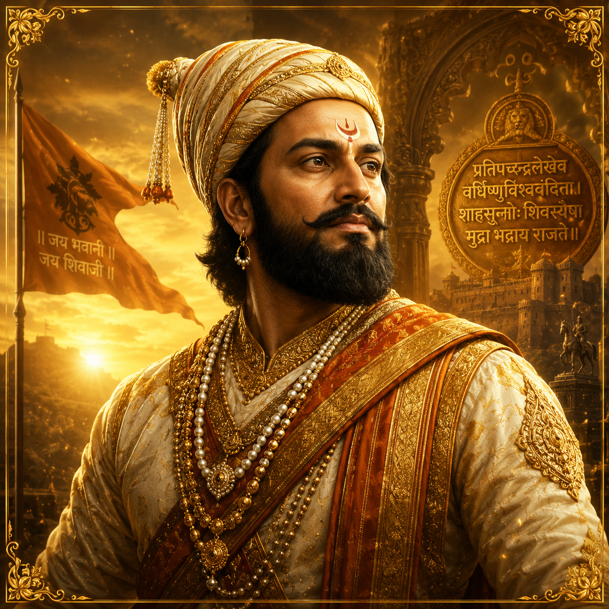

Battle of Pavan Khind Explorer
In the rain-soaked ghats of the Sahyadri, a handful of Maratha warriors under Baji Prabhu Deshpande held a narrow mountain pass against a vast Adilshahi army — buying Chhatrapati Shivaji Maharaj the hours he needed to escape to safety. It was a battle won not by numbers, but by sacrifice.
The Stand That Saved a Kingdom
In 1659, Chhatrapati Shivaji Maharaj had slain the Adilshahi general Afzal Khan at Pratapgad, igniting a war with the Sultanate of Bijapur. The following year, the Adilshahi commander Siddi Jauhar laid siege to Panhala fort, trapping Shivaji inside with a vast army and a blockade that seemed impossible to break.
On the night of 13 July 1660, Shivaji slipped out of Panhala with a small band of warriors, heading for the safety of Vishalgad fort. The Adilshahi forces, led by Siddi Masud, gave chase. At the narrow pass of Pavan Khind, Baji Prabhu Deshpande and his men turned to face the pursuers — and held the gorge until the king was safe.
🏛️ At a Glance
- 13 July 1660 — Fought in the Pavan Khind pass near Vishalgad, Maharashtra.
- Maratha Victory — A strategic rearguard action that secured Shivaji's escape.
- Heroic Stand — Baji Prabhu Deshpande held the pass with a handful of warriors.
- Legend of Sacrifice — A symbol of loyalty and selfless courage in Maratha history.
The Key Figures
Two commanders and one unforgettable sacrifice defined the day at Pavan Khind.
Baji Prabhu Deshpande
- Role — Commander of the Maratha rearguard at Pavan Khind
- Command — A few hundred hand-picked warriors, including his brother Fulaji
- Sacrifice — Held the pass until mortally wounded, fighting to the last
Chhatrapati Shivaji Maharaj
- Role — The Maratha king escaping Panhala for Vishalgad
- Command — The main body of the escape column
- Legacy — His survival preserved the fledgling Maratha kingdom
Siddi Jauhar & the Adilshahi
- Role — Adilshahi general besieging Panhala and pursuing Shivaji
- Command — A large army with heavy cavalry
- Defeat — Unable to break the pass before Shivaji reached safety
Why it mattered: Baji Prabhu's stand turned a desperate retreat into a legend. His loyalty gave Shivaji the time to reach Vishalgad, preserving the Maratha cause at its most fragile moment.
How a Handful Held a Pass
The Pavan Khind pass was a natural fortress: a narrow defile between steep hills where the Adilshahi cavalry could not deploy its numbers. Baji Prabhu used the terrain to neutralise the enemy's overwhelming advantage, turning the pass into a killing ground where only a few could fight at a time.
His warriors fought in relays, holding the line with swords, shields, and muskets while Shivaji's column hurried toward Vishalgad. The plan was simple and deadly: hold the pass until the cannon of Vishalgad boomed the signal that the king was safe — then, and only then, fall back.
⚔️ Tactics at a Glance
- Terrain Advantage — The narrow pass neutralised the Adilshahi cavalry.
- Rearguard Action — A small force held a defensive line against a larger army.
- Signal Discipline — The fight continued until Vishalgad's cannon confirmed Shivaji's arrival.
- Sacrificial Defence — Baji Prabhu fought on despite mortal wounds.
⚔️ The Verdict of Pavan Khind
- Maratha Strategic Victory — Shivaji reached Vishalgad and the kingdom survived.
- Baji Prabhu Martyred — The rearguard commander fell at the pass he defended.
- Adilshahi Frustrated — The pursuers failed to capture the Maratha king.
- Legend Born — The stand became a cornerstone of Maratha identity.
Why Pavan Khind Was the Turning Point
Had the pass fallen early, Shivaji would have been captured or killed, and the Maratha kingdom — barely a decade old — might have ended before it truly began. Instead, the sacrifice at Pavan Khind bought the time that let the Maratha state survive its darkest hour.
The battle proved that a small, determined force, fighting on ground of its own choosing, could defy an empire. It became a template for the guerrilla warfare that would later carry the Maratha banner across India.
A Legacy of Loyalty
Baji Prabhu Deshpande's stand at Pavan Khind became one of the most celebrated acts of sacrifice in Indian history.
A Hero Remembered
Baji Prabhu Deshpande is honoured as a symbol of loyalty and self-sacrifice. His name is recited alongside Shivaji's in the ballads and powadas of Maharashtra.
The Maratha Spirit
The stand at Pavan Khind inspired the guerrilla ethos of the Maratha Empire — speed, terrain, and sacrifice over sheer numbers.
The Pass Remembered
The site of the battle, near Vishalgad in Maharashtra, is a place of pilgrimage for those who honour the warriors who gave their lives there.
Chronology of the Battle of Pavan Khind
From the killing of Afzal Khan to the escape at Pavan Khind — the road to the legendary stand.
Afzal Khan Slain
Shivaji kills the Adilshahi general Afzal Khan at Pratapgad, igniting open war with the Sultanate of Bijapur.
Siege of Panhala
Siddi Jauhar's Adilshahi army besieges Panhala Fort, trapping Shivaji inside with a strong garrison.
The Escape Begins
Shivaji slips out of Panhala at night with a small band, heading for Vishalgad — with the Adilshahi in pursuit.
The Stand at Pavan Khind
Baji Prabhu Deshpande and his warriors hold the narrow pass, fighting the pursuers until the signal from Vishalgad.
Shivaji Reaches Vishalgad
The king arrives safely at Vishalgad fort. Baji Prabhu, mortally wounded, falls at the pass he defended.
The Kingdom Endures
Shivaji rebuilds his forces and continues the struggle, laying the foundation of the Maratha Empire.
The Pass Remembered
A glimpse of the mountain ghats, the forts of the Maratha country, and the king who escaped.



📚 References & Further Reading
- Sarkar, Jadunath (1919). Shivaji and His Times. Longmans, Green & Co.
- Sardesai, G. S. (1946). New History of the Marathas. Phoenix Publications.
- Pagdi, Setu Madhavrao (1983). Shivaji. National Book Trust, India.
- Dighe, V. G. (1944). Shivaji and the Adilshahi. Indian Historical Records Commission.
- National Council of Educational Research and Training (NCERT). Our Pasts — II (Class VII History).
- Encyclopaedia Britannica. Battle of Pavan Khind.